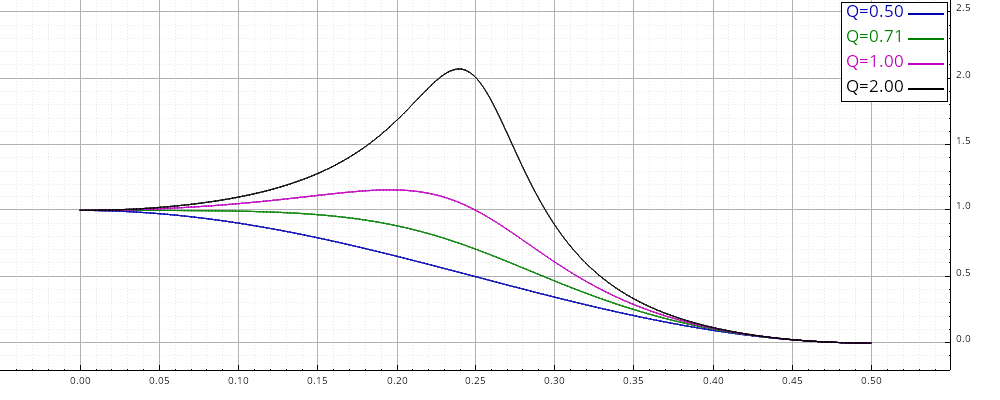

Linear filtering
This modules contains Functions for the design, analysis and implementation of dicrete LTI (Linear Time Invariant) filters
Filters are represented in the librairy either, for FIR filters, by a vector of coefficients (class Eigen::ArrayXf), or by their tranfert function (class FRat) in the general case (IIR or FIR filters).
Once the design of a filter is done, it can be used to process directly a vector (finite length signal), with such functions as filter(), filtfilt(), etc. described in the section Filtering of finitge length signals. To process streaming signals (for instance, real-time signal processing), different structures with context are available, described in the section Real-time filtering.

#include "dsp/filter.hpp"
Sub-groups
Analysis of linear filters
Functions to analyze the different responses of a LTI filter.
Linear filter design
Conception of FIR or IIR filters (transfert function or coefficients computations)
Windows
Classical windows for FIR filter conception or spectral analysis.
Filtering of finitge length signals
Filtering of finite length signals.
Real-time filtering
Implementation of continuous streaming filter.
Sample rate conversions
Filters for decimation and interpolation.